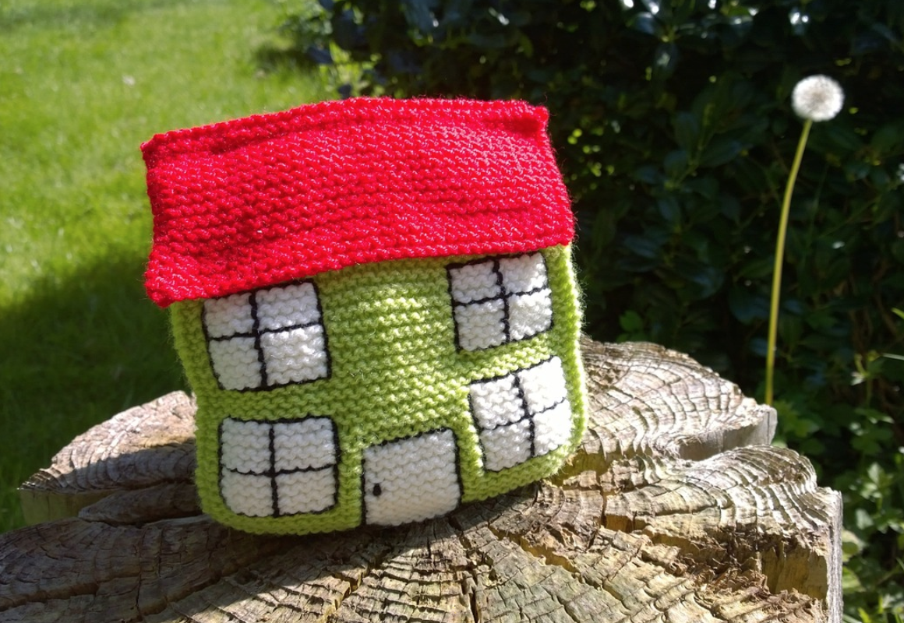

Idea Origin
Since lockdown, people have been experimenting with new ways to socialise and communicate. A popular option for this has been video calling, which has lead to huge amounts of software downloads and self education on the topic.
Since lockdown, people have been experimenting with new ways to socialise and communicate. A popular option for this has been video calling, which has lead to huge amounts of software downloads and self education on the topic.
The most amazing part of this, is that demographics that were once seen as technophobes, are now the ones pushing this movement forward. They are the ones that have against the odds, taight them selves how to be a little more tech savy, which has opened the door to many new tech functions and activities in their own house. This demographic in my opinion can be described at 40-70, predomanently female, and of a social nature. There now seems to be a gap in the market to supply a value or follow up to this large demographics new found skill.
Read More
The Mission
To take advantage of the new skill sets discovered over the lockdown period, I plan to build a website that will offer live video link tutorials. The site will offer accounts for both tutors and students alike, and offer a range of craft related courses. The plan at the moment is to utilise the popular software "zoom" that so many people have already now installed on their computer. Zoom seems to be a good candidate to to its abilitity to be able to embed its frame into a web page. Each tutor will have their own profile page with details on the courses that they offer. They will also be subject to a reviewing system and "likes". Each tutor profile will also have an intergrated eccomerce store on their page to sell products related to their craft.
